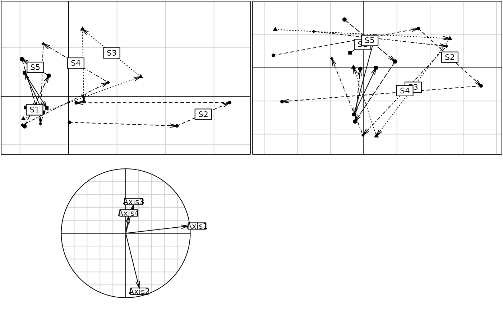

Within-Class Analysis
wca.RdPerforms a particular case of an Orthogonal Principal Component Analysis with respect to Instrumental Variables (orthopcaiv), in which there is only a single factor as covariable.
Arguments
- x
a duality diagram, object of class
dudifrom one of the functionsdudi.coa,dudi.pca,...- fac
a factor partitioning the rows of
dudi$tabin classes- scannf
a logical value indicating whether the eigenvalues bar plot should be displayed
- nf
if scannf FALSE, an integer indicating the number of kept axes
- ...
further arguments passed to or from other methods
Value
Returns a list of the sub-class within in the class dudi
- tab
a data frame containing the transformed data (substraction of the class mean)
- call
the matching call
- nf
number of kept axes
- rank
the rank of the analysis
- ratio
percentage of within-class inertia
- eig
a numeric vector containing the eigenvalues
- lw
a numeric vector of row weigths
- cw
a numeric vector of column weigths
- tabw
a numeric vector of class weigths
- fac
the factor defining the classes
- li
data frame row coordinates
- l1
data frame row normed scores
- co
data frame column coordinates
- c1
data frame column normed scores
- ls
data frame supplementary row coordinates
- as
data frame inertia axis onto within axis
References
Benzécri, J. P. (1983) Analyse de l'inertie intra-classe par l'analyse d'un
tableau de correspondances. Les Cahiers de l'Analyse des données, 8, 351--358.
Dolédec, S. and Chessel, D. (1987) Rythmes saisonniers et composantes stationnelles
en milieu aquatique I- Description d'un plan d'observations complet par projection de
variables. Acta Oecologica, Oecologia Generalis, 8, 3, 403--426.
Note
To avoid conflict names with the base:::within function, the
function within is now deprecated and removed. It
is replaced by the method wca.dudi of the new generic wca function.
Author
Daniel Chessel
Anne-Béatrice Dufour anne-beatrice.dufour@univ-lyon1.fr
Examples
data(meaudret)
pca1 <- dudi.pca(meaudret$env, scan = FALSE, nf = 4)
wit1 <- wca(pca1, meaudret$design$site, scan = FALSE, nf = 2)
if(adegraphicsLoaded()) {
g1 <- s.traject(pca1$li, meaudret$design$site, psub.text = "Principal Component Analysis",
plines.lty = 1:nlevels(meaudret$design$site), psub.cex = 1.5, plot = FALSE)
g2 <- s.traject(wit1$li, meaudret$design$site,
psub.text = "Within site Principal Component Analysis",
plines.lty = 1:nlevels(meaudret$design$site), psub.cex = 1.5, plot = FALSE)
g3 <- s.corcircle (wit1$as, plot = FALSE)
G <- ADEgS(list(g1, g2, g3), layout = c(2, 2))
} else {
par(mfrow = c(2, 2))
s.traject(pca1$li, meaudret$design$site, sub = "Principal Component Analysis", csub = 1.5)
s.traject(wit1$li, meaudret$design$site, sub = "Within site Principal Component Analysis",
csub = 1.5)
s.corcircle (wit1$as)
par(mfrow = c(1,1))
}

plot(wit1)
#> Error in s.arrow(dfxy = wit1$c1, xax = 1, yax = 2, plot = FALSE, storeData = TRUE, pos = -3, psub = list(text = "Loadings"), plabels = list( cex = 1.25)): non convenient selection for dfxy (can not be converted to dataframe)